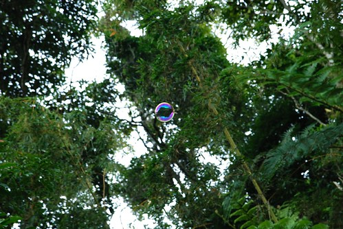

打鐵趁熱繼續來賞我們的金針花~ **赤科山 賞花最舒適** (這些文字皆摘錄自其他網站) 赤科山的栽種面積較六十石山廣闊 分為四大區域 其中又以東區.南區最為密集 坡度較緩 部分地區就像平原稻田般平坦 賞花拍照相當方便 此處的林地也較其他兩地茂密 夾道數目蔽日遮陰 遊客賞花較為舒適 然而赤科山深入山凹 林木茂密 視野的開闊性較差 縱谷開闊的美景 僅在上山道路的少數路段可見
離開六十石山後 我們刻意的多繞一些路走卓富產業道路到玉里 沿途完全不輸193縣道南段的稻田風光 讓我跟徹爸兩人一路碎碎念著”稻穗成熟之時一定很美很壯觀” 
途經玉里新紅色鐵橋還恰巧的遇著火車經過 這真是所謂的”有緣”阿 只可惜近拍不出火車經過的哄隆哄隆聲及其震撼
順道繞進玉里鎮裡來頓豐盛的下午茶 玉米麵+紅豆布丁牛奶冰 很奇怪 下午3-4點的尷尬時刻麵店裡竟也高堂滿座 滿是觀光人潮
離開玉里鎮後便北上往赤柯山前進 今晚我們將落腳於赤科山上的農舍
赤科山的由來： 當時整片山頭盛產赤科樹，日據時日本人將堅硬的赤科樹輸往日本，做成槍托而聲名一時，因此當地被稱為赤科山。現在，滿山的經濟作物由赤科樹林變成金針花田了。金針花開始大片種植，則是一批從嘉義來的移民最早開發的。民國四十八年一場「八七水災」，許多西部的農民一夕之間流失了田產房舍，無地耕作營生，於是大批往地廣人稀的後山遷徙。由於東部平原的耕地已為先期移民所 據墾，於是只好遷往山麓或丘陵地帶，從事山園墾殖。在那個時候沒有道路，只有繞腸小徑，所有的物資與農產品，全都得靠人力以肩挑方式運送。一個山中的小村 莊，經過三、四十年蓽路藍縷的開發，由當時荒蕪的赤科山已變成了黃涔涔的金針山。
那兩天我跟徹爸還一直好奇著 為什麼當初會有人跑到這樣隱僻的山麓裏種起金針花ㄋ? 因為真的很難想像 很難想像… 那種魄力與勇氣完全不是我們這些念書長大然後理所當然在城市工作的我們所能想像
趁著天黑前抵達山上還可以在晚風徐徐的傍晚散個涼爽的步 
抵達農舍後跟女主人打聲招呼 連房間都沒看 行李也沒下車(其實女主人也忙著打理晚餐) 我們便急著去花海區看金針花 農會保留的大片金針花海區 剛好離民宿不遠 散個步一下子就到了
可能因為傍晚遊客已散去的關係 赤科山不若六十石山那樣人聲鼎沸 多了份我喜歡的靜懿
只是傍晚六點鐘 沒有藍天 沒有白雲也沒有陽光 所以聽到幾個攝影客”沒有陽光拍不出感覺(漂亮)”的抱怨聲 可是我覺得就賞花來講 沒有熾熱 沒有人潮 真的挺不錯的 (我的人潮恐懼症真是越來越嚴重了) 
一樣得來個到此一遊照嚕… 先從三人行開始 之一
之二
之三
然後是二人行 之一 (我喜歡這張 媽媽有小美 兒子有大帥)
之二
疑 則麼沒有愛的二人行照ㄋ? 唉…小人越大 拍照越來越難搞 得看心情 心情不好連偷拍都不准
大頭照之一之二之三之四
除了我們拍照的那片金針花海外 其餘的金針大部分也都是呈現花苞狀態的黃黃綠綠
再近看一些…可以看出那一個個花苞被採下後的痕跡
其實我比較喜歡這樣沒有盛開的黃黃綠綠金針田
盛開的金針黃田鮮豔的太過耀眼
而且有”一日花”之稱的金針花 日正當中感覺曬焦焦而傍晚時分卻又屆凋零
忘記我們母子三人在研究什麼了 …或許是花朵上的小蟲子吧 
也沒注意到愛愛在這裡玩起躲貓貓
還一個不小心就被阿徹來個熊抱 措手不及…
兄妹倆殷切期盼 從台北帶來的大泡泡總算獲准在這裡小玩一下 (因為顧慮金針田是要採收的 所以不讓小人們隨便在金針田裡吹泡泡)
六點鐘天還沒暗 我們又再慢步回農舍休息等著吃晚餐
途中發現天空有片”羽毛”雲 很是特別…
農舍前面有一顆超大顆的大石頭 我們也湊熱鬧的爬上這石頭欣賞山景 可以讓這麼多的人或站或坐的在上面可見這石頭真的粉大 而所謂上山容易下山難 要下石頭時才發現”下來”真是困難且狼狽多了
等著七點吃飯前 實在很累只好不好意思的跟忙著準備晚餐的農舍主人問了我們今晚睡覺的地方 然後進房玩跳棋打發時間….(我站在門口照進房間的樣子 )
雖然早已知道上山住的都是很簡單的農舍 但看到房間位於農舍後方的僻道裡還真有點錯愕 因為沒view沒關係 但是房間不大太通風且未有電風扇 沒有冷氣很OK因為山上涼爽 但是沒有風扇對我們來講真的小悶小熱 而最大的問題是今晚此農舍有一批20位左右的大家族同時入住兩外兩間大通鋪 也就是說有另外20多人考驗著農舍的木板隔間以及共用兩間浴廁 唉… 我都可以想像今晚對我來講會是個漫長難熬的一夜了…
山上覓食不易 所以就近給農家準備了今晚的金針大餐 金針香菇雞湯 炸金針 以及涼拌金針 當中涼拌金針口感跟清爽度很不錯 可以學起來在家試試
吃完晚餐短暫休息後 趕著人潮前我們一家子趕緊分兩批去洗澡刷牙 然後9點入寢 因為房間夜燈過暗怕黑的父子三人開著大燈睡覺 加上硬床墊以及那一大家子人輪流的盥洗洗澡 我不知道熬到幾點才似乎有睡著的樣子 … 可是持續的做夢(前兩天前同事發生意外事故) 加上清晨又開始聽到準備去看日出的準備人聲 這一晚我好像有睡跟沒睡一樣一整個的累 或許因為這樣讓此次的賞花滿意度打折不少… 而徹爸他們父子三人卻能在就寢沒多久後便陸續沉睡 打呼 更加讓我羨慕他們三人真有去露營的命阿!! (我的難入睡會讓我日後的露營/登山美夢增添不少困難度阿)
雖然沒睡好(或許是既然…) 清早六點還是拖著疲累叫醒全家準備出門賞花
從農舍出來往赤科山主要道路的這條小路 景色真的好 這應該是這家農舍最大的優點 
赤科山因山型不同 有別於六十石山多了一點層次的美感 我很喜歡這種有層次的坡度美感 感覺很smooth很舒服 但相機卻很難拍出現場的那種感覺
海拔900多的高山上 早晚很涼爽得加件小外套以免著涼
小愛繼續提著他的泡泡袋賞花去 準備等待時機大玩泡泡
清晨6點半鐘 社區裡除了農人陸續出門採收金針外 一片寧靜祥和
往三顆大石頭的路上是一片片連綿的金針田 下圖最上方黃色的那片便是我們前一日大照特照的金針花海區
聽說金針花是在上午十點後會開始綻放 所以農家們透清早便開始採收金針 看著她們這樣一直彎著腰一根一根的採收 真的覺得好辛苦喔… 那到底我們是要多吃金針刺激經濟 還是要體桖他們辛勞少吃點阿
清早的涼爽中 我們邊走邊聊外加觀賞路旁偶出現的美麗小花小草小蟲 - 不同品種的金針花
-蘭花上的小毛蟲
- 紫色年輕小花
- 路旁可愛金針小人圖騰
走阿走總算走到赤科山上頗負盛名的三顆石頭處 阿徹數了數 納悶的問說”明明有六顆阿” ㄟ…可能只有三顆巨石吧?!
除了農會補助的金針花海區可以稍微進入拍照外 大部分的金針田都張貼有 私人農地外人勿近的告示 (我相信很多攝影同好為求好照片會視而不見的) 所以我們很乖的像告示上說的 “看我 照我就好 不要踩我”
我發現徹爸的攝影境界還真是越來越高了 “芭樂”的照片越來越少 卻拍著許多出乎我意外構圖的景緻
不知道大家有沒有發現 現在的照片都是徹爸的單眼跟DC交錯著放 (比例約有一半一半喔) 所以我家的攝影設備跟技巧都沒有很”高深” 算是很忠實的呈現旅行中所見 可信度還算高…
赤科山給人有種社區營造的感覺 很乾淨很舒服 這點比六十石好很多 如果不是前一晚這樣的睡不好 我應該會很喜歡這裡…
走大半小時的路賞花 小愛越來越沒有耐性 不停的問著”我可以玩泡泡了嗎?”
又是”還不行” 到底什麼時後才可以玩泡泡? 小心我生氣變身成美少女戰士
總算在沒有金針花海的路上 讓兄妹倆小玩泡泡 向來很”惜物”的愛愛玩個幾回便滿意的收好泡泡 反倒阿徹豪邁的大手大手揮毫不心疼(當然不心疼 因為那也是愛愛的泡泡) 
可以在山林裡飄很久的泡泡有種讓人精神為之一振的小驚喜 
早上八點太陽出來 天又開始熱了…. 該是回去吃早餐了…
八點多回到農舍吃完早餐也買了一些農產後 我們開著車去山的另外一頭瞧瞧 經過有名的汪家古厝時 因為屋頂上沒有曬金針(很有名的景緻)加上有點濃厚的商業氣息所以我們並未多加停留 而沿途發現山的這頭有著幾家有好view且看外觀看起來設備挺不錯的民宿/農家 看來下回如果要再上山賞金針可以考慮住這邊 這些民宿提高了我們日後再上山的意願…. 
一路在車上所見的金針花景致都差不多 加上我們的發懶 所以徹爸除了在車上用懶人照相法照幾張外 我們並未再下車走走賞花
告別美麗金針山 我們要趕緊下山趕路回台北嚕 今天得從玉里開6-7小時的車回台北 加上不可預測的星期日北宜高塞車 還是盡早上路為上策…
半途經過瑞穗繞進吉蒸牧場喝牛奶小憩
吉蒸牧場位於泛舟中心旁的堤防外 是花蓮第一家”無毒農藥”標章的酪農
整體環境簡單清爽也有好景致
只是天氣真的太熱 讓人除了躲在屋簷下喝牛奶外並不會想多去逛逛園區
600CC 牛奶+兩顆鮮奶饅頭+幾片餅乾及乳酪蛋糕 套餐假180元 無毒餐真的好貴阿… 但是鮮奶香濃好喝
喝完牛奶小逛一下可愛動物區 在那第一次聽到羊真的是”妹妹”叫哩 我們笑愛愛說”它們怎麼一直在叫你阿?!”
吉蒸牧場停留半小時後 繼續我們的趕路行程 下一個休息處是壽豐的豐春冰菓店 七月時在這裡吃的甘蔗冰讓徹爸念念不忘 這回沒上回的好運氣 等了約莫半小時才吃到冰 店裡人聲鼎沸 真的真的好誇張阿!!!
店內座無虛席加上人潮壅擠的悶熱 先讓徹爸帶著阿徹小愛到附近的壽豐火車站納涼等候 吃著亦是店內販售的紅豆冰棒 阿徹的暑氣應該消了不少 只是父子倆竟又為了這冰棒該怎麼吃而鬧彆扭 號 好笑的令人搖頭 (因為阿徹亂亂吃 吃得滿臉滿手滿身都是) 
還是小愛比較乖願意聽徹爸的指導…. 徹爸說: 乖 愛你喔~ 
兩碗好吃的甘蔗冰結束我們這回的金針花賞花行! 雖然小趕 小累 但還是不虛此行…真的了卻媽媽多年來的心願 真是大感謝徹爸的鼎力配合!!!